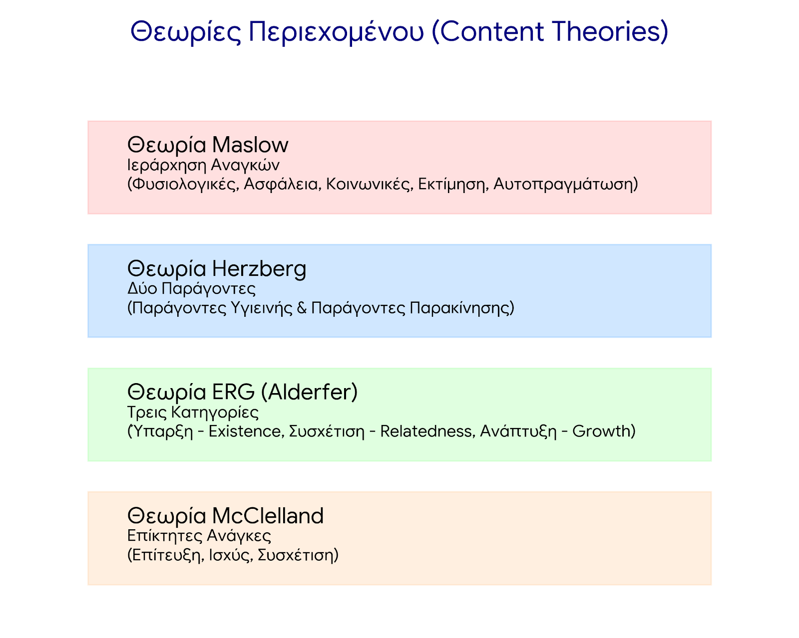
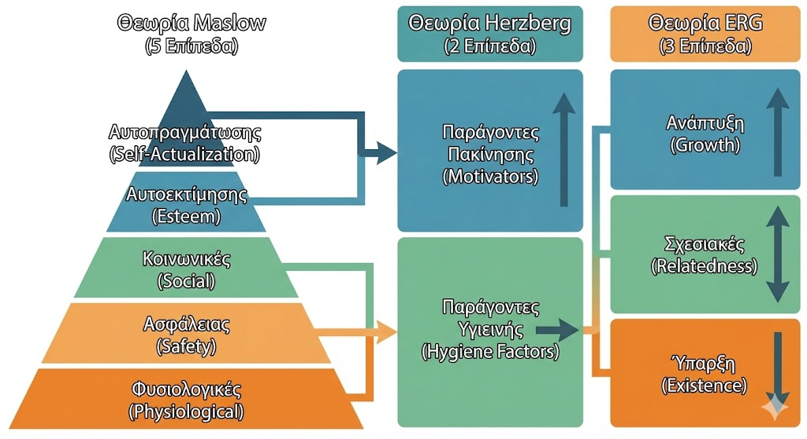
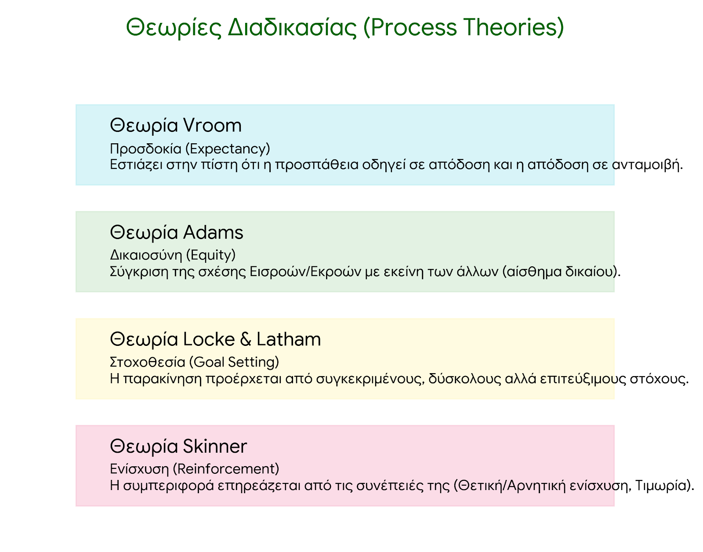
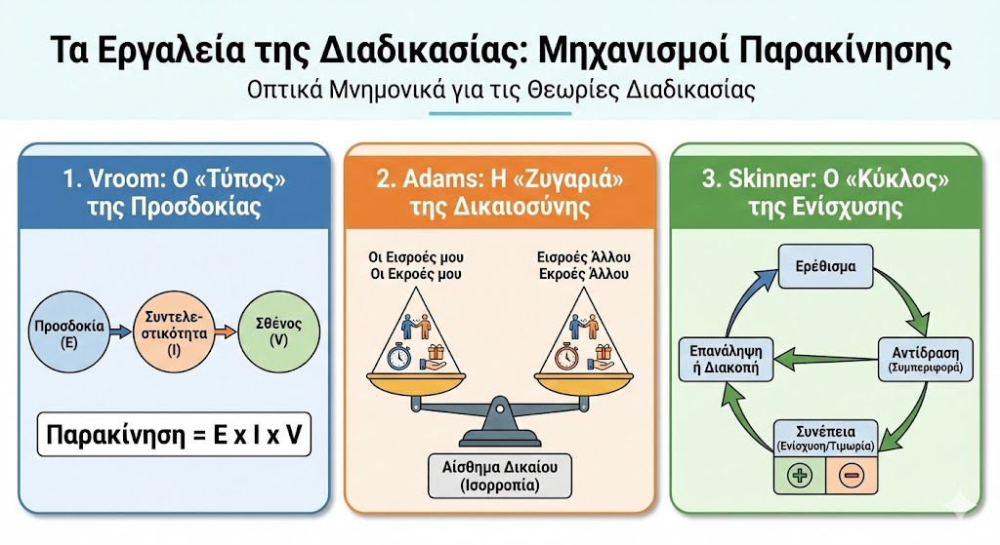

Επανάληψη Μαθήματος Management
Θεωρίες Παρακίνησης (Content & Process)
Παρακίνηση - Γενική Επισκόπηση

Επισκόπηση όλων των θεωριών παρακίνησης στο management, από βασικές ανάγκες έως αυτοπραγμάτωση.
Content Theories - Εισαγωγή
Content Theories εστιάζουν σε εσωτερικές ανάγκες (Maslow, Herzberg, ERG) που ωθούν την συμπεριφορά των εργαζομένων.
Ιεραρχία Αναγκών Maslow 3

Η πυραμίδα του Maslow: Φυσιολογικές → Ασφάλεια → Κοινωνικές → Επίτιμη → Αυτοπραγμάτωση. Ικανοποίηση από κάτω προς τα πάνω. [web:55]
Maslow, Herzberg, ERG Σύγκριση 2

Σύγκριση: Maslow (5 επίπεδα), Herzberg (Motivators vs Hygiene), ERG (Existence, Relatedness, Growth) ως συμπίεση Maslow. [web:51]
Maslow - Herzberg - ERG Θεωρίες
Λεπτομέρειες θεωριών: Herzberg διαχωρίζει παραγόντες ικανοποίησης (motivators) από αποφυγή δυσαρέσκειας (hygiene). [web:50]
Maslow - Herzberg - ERG 2.1

ERG του Alderfer επιτρέπει πισωγύρισμα αναγκών, σε αντίθεση με Maslow. [web:51]
Content vs Process Theories

Content: Τι κινεί (ανάγκες). Process: Πώς κινεί (expectancy, equity). Σύγκριση για εφαρμογή στο management. [web:60]
Process Theories Εισαγωγή
Process Theories εξετάζουν διαδικασίες λήψης αποφάσεων για παρακίνηση (Vroom, Adams). [web:60]
Process Theories Λεπτομέρειες
Περισσότερες λεπτομέρειες σε Process Θεωρίες για πρακτική εφαρμογή σε οργανώσεις.